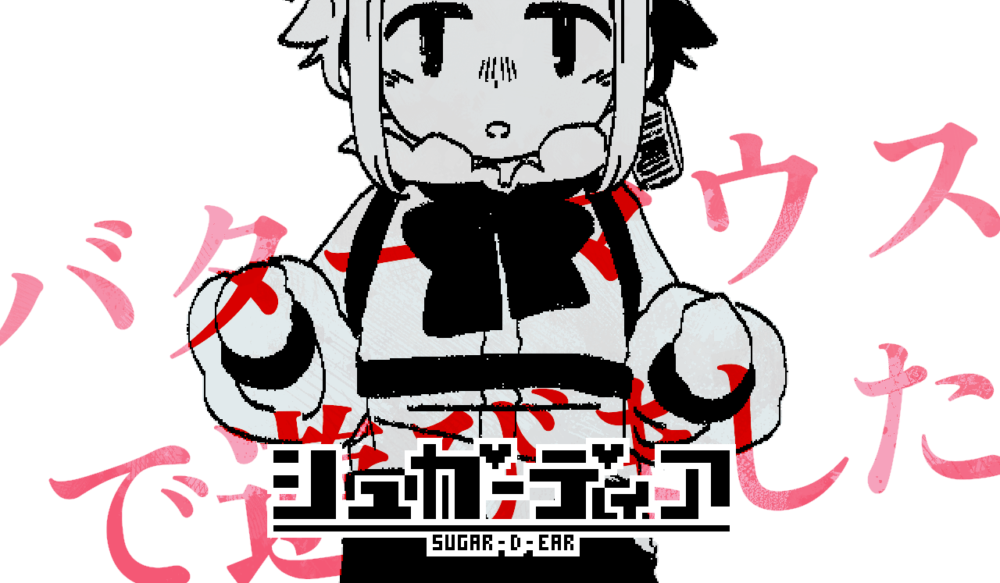

「えっとね、その……ごめん、なさい」
バターマウスは小さな声でおずおずと言いました。
「えと、ちがうの。ドクターにあやまれっていわれたからとかじゃないの」
つっかえつっかえ、たどたどしく言い募るようにバターマウスは言葉を重ねていきます。
「あなた、ドクターのおともだちっていってたから」
「でも、けいさつっていってて、いっぱい、こまらせたっておもうから」
そこまで言うと、息が切れたのかふうはあと深呼吸をしています。
幼い言葉ではありますが、難しい立場にしてしまったのを謝りたい様子でした。
「……あのね、わるいことをしちゃったっていうこと、わかってるの。でも、でもね……」
そこまで言って、バターマウスはためらいながら言葉をつづけました。
「しんじゃうことをなおして、なんでわるいのかはまだわからない」
「だって、しんじゃったらかなしいのに、なんでなおしちゃだめなのかわかんないよ」
でも、でも、これはやっちゃダメなんだってことも……。
やっちゃダメって思うだけじゃほんとはだめなのもわかってる。
泣きそうな顔でバターマウスは言います。
指が震えています。肩も震えています。
自分ができないという現実に怯えるように、それでも立ち向かう諦めの悪さを瞳いっぱいに浮かべています。
「こんどはやらないって、いえるようになるから。それまで、まっててほしい」
一度転んでしまった後でも立ち上がる強さをもって、バターマウスは言うのでした。
「……」
バターマウスは何も言いません。
ずっとセクション１の『ドクターの記憶』のコンソールに何か打ち込んでは、反応を確かめているようでした。
かちゃかちゃ。たんっ。……。
かちゃかちゃ。たんっ。……。
何度かそんなことを繰り返し、ふと、バターマウスは顔を上げました。
「……なにか、よう？」
よどんだ声が、低く尋ねます。
返る声がないまま、バターマウスはすぐにコンソールに視線を戻しました。
「いっかいでなんか、あきらめないよ。けんきゅうでうまくいかないことなんていくらでもある」
ぽつ、ぽつ。
雨垂れが石に落ちるように、ちいさく、言葉が落ちていきます。
「ゆうきぶつじゃだめなら、こんどはむきぶつでつくる。だめなら、バーチャル、つぎは、……」
あきらめないよ。
あきらめるもんか。
バターマウスは泣くことはありません。
でも、落ちる言葉がまるで涙のように転がるのでした。